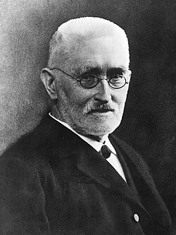

Dedekind Invents the Key Definition for Writing Programs
S(n)=n+1 (successor function)

In mathematics, a set A is Dedekind-infinite (named after the German mathematician Richard Dedekind) if some proper subset B of A is equinumerous to A
"A system is said to be infinite when it is similar to a proper part of itself"
Timeline
Select a Year
"I regard the whole of arithmetic as a necessary, or at least natural, consequence of the simplest arithmetic act, that of counting, and counting itself as nothing else than the successive creation of the infinite series of positive integers in which each individual is defined by the one immediately preceding;"
"In science nothing capable of proof ought to be accepted without proof."
add more quotes, citations probably, maybe add hyperlink to source? Everything after here in the section is experimental
Dedekind's picture is experimental, its there now in case we want to keep it, look into using href
READ MORE